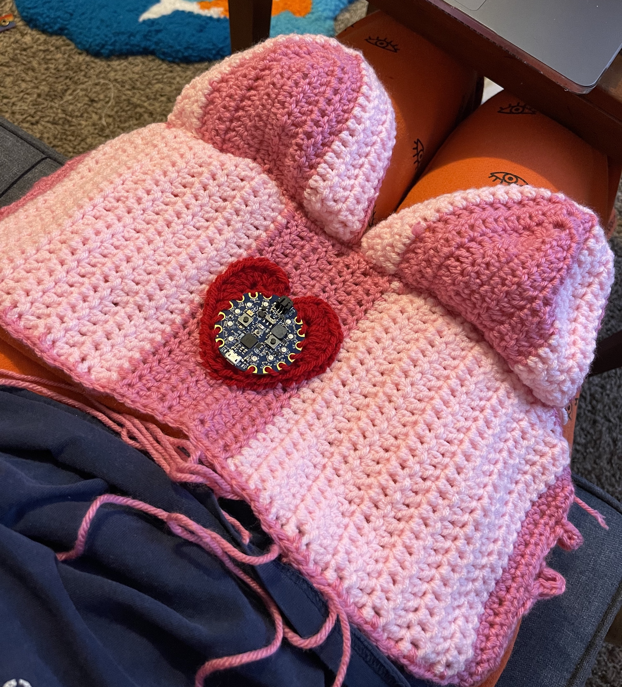

Arduino
Purpose
For this project, I created a crochet top with the Circuit Playground sewed into the center. The Circuit Playground senses the color of the object being held in front of it through the light sensor and then changes the color of all the Neopixels to the detected color. The overall goal of my project is to convey the larger idea of how women sometimes feel as though they have to change themselves to fit into a certain space. I tried to reflect this idea through the action of the board detecting what color is closest in it's environment, and then changing to be that color. I believe this idea can be related to multiple spaces, such as being a woman in a dominantly male field, or being in a relationship where you feel like you have to change to match the other person. I maintained this theme through the design of the top. I crocheted a heart to house the Arduino to show how the Arduino is meant to symbolize one's heart.
Code Function
When one of the board's buttons is pressed, the light sensor connected to analog pin A8 detects the level of light on a scale between 0 and 1023. This allows the light sensor to detect the color of the object in front of it once the button is pressed. This is because different colors reflect different amounts of light, so the light sensor is able to distinguish between colors based off this value. Once the RGB values of the color have been detected, the Neopixels are then changed to that color.
Project Links
Explanation/Demo Video: Link
Arduino Code: Link
Arduino Demo Video: Link
Inspiration: Link